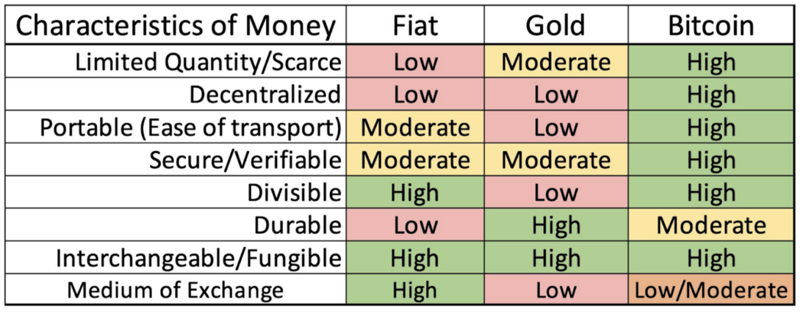
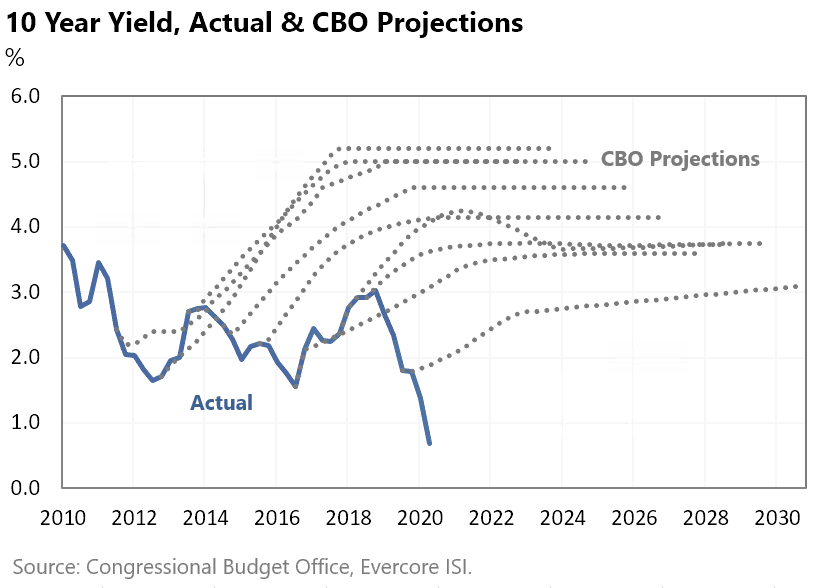

Breakthroughs, that step-change our lives for the better, invariably come from something that most
people couldn’t see. Our belief of how the world should exist and operate is shaped from looking
backwards, not forward, so it makes sense that new paradigms that change everything — face
resistance in our minds. Because most people don’t see them, breaking through an existing paradigm
needs to provide enough compelling value for users to disrupt an old paradigm. Apple’s iPhone for
instance, didn’t copy the market leader, Research in Motion’s Blackberry design of needing a
keyboard or selling to businesses who required RIM’s security. It created a digital interface when
that wasn’t ‘needed’ and created an entirely new platform that changed the industry as a result.
Along the way, the Blackberry died, unable to compete with the value for users, that was now
increasing exponentially on Apple’s platform.
That process describes “Creative Destruction” a paradoxical term first coined by Joseph Schumpeter
in 1942 to describe how Capitalism works in a “free market.” Entrepreneurs innovate and “create”
value for society — and that value gained by society also often “destroys” the former monopoly
power. That process and its importance is at the centre of how all modern economies have evolved and
given rise to most of the benefits to society we take for granted today. New winners become so
valuable that they disrupt existing market power or structures. It is all driven from a
near-constant flow of innovative entrepreneurs with bold ideas and the capital backing them that go
up against the status quo and are only successful, “if’’ they create value for society.
For the process to work, failure is critical! Both for entrepreneurs and the capital in them whose
business doesn’t work, and for legacy businesses that get disrupted by them if their innovation
brings better value to society. And while failure is hard, preventing failure is much worse.
Why? Because by preventing failure, market incentives become warped, and in doing so, eventually put
a small number of people (government/central banks) in charge of choosing who gets what, instead of
the free market.
Unfortunately, preventing failure has been the policy makers tool for the last 20 years and it has
enormous consequences. By socializing losses and preventing failure in our economies, central banks
and governments have all but ensured that the existing monetary system of the world collapses — and
is replaced by something new. In other words, by preventing failure in economies in the short term,
Creative Destruction has only moved — now to the level of our international economic system.
I believe with what is to come, Bitcoin has a higher than average probability of overcoming all
barriers and becoming a global reserve currency. More importantly, I believe it gives humanity its
best chance for a peaceful transition to the future. A world where the abundance gained from our
technological progress is more widely distributed. It is not hyperbole to say that almost everything
changes as a result of this innovation.
A 10x strategy — be a big fish in a small pond first.
When creating new technology companies, a framework I use to understand if something has an ability
to win is ‘the 10x advantage’. Meaning that, unless a new company (the challenger) can deliver a 10x
advantage to the market, it has no chance of creating escape velocity and becoming a new category
leader. While a 10x advantage does not guarantee the success of a challenger, it greatly enhances
its probability.
There are a number of reasons for this. For a company to create a new category, it has to first
convince a market that its product or service is far superior to the one it is trying to replace
(i.e. that people need to change). If the challenger doesn’t have a 10x type of advantage, it
becomes difficult to even be “found” through the noise of an existing market. Harder still, it has
to do this while battling two major forces:
1 : If successful, the existing monopoly will attempt to beat the innovation — either by
changing their own offering, or using their existing market power to kill it, and
2 : With success comes many new entrants (copycats or slight innovations) that enter the market
to compete (confusing the market as to benefits).
For a challenger to continue to advance then, it must continue to offer more advantage than the
copycats while staying under the radar from the monopoly for enough time to gain enough scale or
gain “network effects” before the monopoly takes notice. The best way to do this is not by competing
on everything that a monopoly competes on, but instead, picking a very small part of a market that
goes relatively unnoticed by the monopoly and providing the 10x advantage to only that.
Google, starting at only search as their first market (when there was no money in providing search)
as a start-up versus all of its competitors at the time provides a good example. First competing
narrowly (only free search) against every other search website, who was selling advertising at the
time was something that was underappreciated by the monopolies. With the market (individuals) moving
quickly to Google for all things search, it was easier to add functionality (because the users were
already there) to compete with broader platforms like Microsoft.
Therefore, winning a narrow part of the market first (10x advantage) created a path to do everything
else. From Amazon’s start in only books, to Tesla starting at the Roadster, if you examine the path
of almost every new company who breaks through monopoly power, they follow a similar path. The
reason this path goes unnoticed is that by the time the innovation and path are “recognized” by the
broader community, it is too late. It has successfully disrupted the monopoly and people forget what
it looked like in the beginning.
This is a useful analogy when looking at Bitcoin’s evolution from where it was when Satoshi launched
the genesis block to where Bitcoin might go in the future. By designing Bitcoin as the first
“decentralized, non-trust-based” system and designing a fixed scarcity of 21 million Bitcoins into
the protocol, Bitcoin removed the need for a trusted intermediary, and at the same time created
“digital” scarcity.
Bitcoin’s first use case could then be viewed as more of a store of value than a currency since for
it to compete as a currency, it would need to be able to be used widely in society. In other words,
Bitcoin’s narrow 10x advantage could be compared to gold first rather than as a competitor to money.

*It is rather fascinating to watch human psychology as Bitcoin emerges because while dismissing
Bitcoin outright as a store of value, many of the same market participants faithfully believe in
the absolute value of a yellow coloured rock, or a piece of paper with faces and names on it
(that they know is being actively manipulated).
I will attempt to use this framework to describe why I believe Bitcoin (the challenger) is poised
(over time) to replace the existing economic system (the monopoly).
Before I do though, it is worth exploring why an innovation like Bitcoin is required in the first
place.
Technology has changed the rules
Exponentially advancing technological gains bring efficiency. That efficiency is deflationary.
Moving exponentially and into all industries which means prices should be falling on almost
everything.
The reason prices are not falling is that advancing technological progress is incompatible with the
existing monetary system which requires inflation to remain viable. That existing system is being
manipulated so it appears viable and pushes prices up as a result.
Which sets up a conflict to be resolved at a system level.
1 : Exponentially increasing efficiency driven by technological progress requires a currency that
allows for Deflation (the challenger).
2 : The existing fiat monetary system (the monopoly) requires inflation and consequently, it needs
manipulation to remain viable.
The reason that many people don’t see it or truly understand its implications is similar to any
breakthrough in technology. They are trapped within an existing framework (the monopoly) and use
that framework to measure all interactions.
Let’s explore what happens to policy as the two forces of an inflationary monetary policy competing
against exponentially advancing technology come together. Remember, they are opposing forces —
entrepreneurs using technology are trying to deliver more value for less, whilst inflation is moving
in the opposite direction.
Also, note that I have attempted to look at the structural change through a ‘system lens’ rather
than a ‘people lens’. Although any system has bad actors, the predominant force driving decisions
are not because of willful neglect or bad intent, but instead, to protect the status quo (and
monopoly) because it’s very hard to imagine what the future could look like without it.
In other words, changing actors in the system would produce more of the same results and very little
real change. Worse still, when much of society believes that changing actors can fix the system,
society becomes more divided while only serving to perpetuate the status quo.
Additionally, for those hoping that a change to Bitcoin (or challenger system) happens all at once,
be careful what you wish for. While the existing system is producing profoundly negative effects, it
is important to remember, that all of our other institutions currently sit on top of the existing
system (the monopoly) and a sudden change would spell disaster for your way of life.
In my opinion, the best way for people to understand how important Bitcoin (the challenger) is for
the future, is to first understand how the existing system (and not people) amplifies insecurity and
how a change to a different monetary policy (the challenger) would produce infinitely better
results.
So, let’s first consider what the sequence of events would look like from the existing fiat system
(the monopoly):
1 : Must create inflation. Without it, deflation takes hold and wipes out credit and because the
system is based on credit, wealth is destroyed. The chance for policy change that could have
prevented a complete reset to the existing fiat system was about 20 years ago and would have
required an understanding of how fast technology was moving and what it meant for the inflationary
fiat monetary system. Instead, policy makers made the same mistake most people do when looking at
technology. They underestimated its exponential impact. This quote by Nobel Laureate Economist Paul
Krugman in 1998 sums up the thinking at the time — “By 2005 or so, it will become clear that the
Internet’s impact on the economy has been no greater than the fax machine’s.”
So instead of allowing nature to take its course:
2 : Interest rates were manipulated lower to increase growth — and almost every year, taken lower
again as predictions of growth came up short against the reality of technological progress on the
market. Although the chart below references the United States, this was a global phenomenon.

The lower rates and additional debt created produced limited growth which is to say deflation
(prices going down) would have taken hold without it and made the debt un-repayable — causing a
larger deflationary depression than would have happened in step 1.
Now trapped though, the system required ever-lower rates, and the lower rates caused debt binges,
misallocated capital and asset bubbles. Designing more fragility in the system as the severity of
the reset for society only grew. Global debt rose to over $250 Trillion in 2019, with $185 trillion
of that new “stimulus” coming over the last 20 years.
*Note* because technology is continuing to advance exponentially, it will take exponentially more
debt and easing to keep the existing system intact.
It was impossible to see how a system operates by only looking at its individual elements so
politicians, policy makers, citizens and businesses were caught along for the ride. For example,
believing that housing and education expenses always go up without asking whether they would have
gone up without $185 trillion of additional stimulus, leads logically to #3
3) A breaking of the rules of capitalism and distortion of free markets when it is realized that the
debt cannot be repaid.
It is not debt itself that acts to undermine capitalism and the free market.
It is the act of stabilizing an economy through socializing the losses when faced with a
collapse that undermines the free market and capitalism’s own institutional
framework.
Preventing Creative Destruction, therefore, codifies bad behaviour into capitalism itself, since
market participants now realize that the system will always bail them out for fear of a catastrophic
collapse — which is exactly what would have happened — and would happen today without bailouts.
Goodbye to free markets.
From the policy makers (the monopoly) perspective, at this point in the cycle, it would be hard to
allow the entire economic system to collapse — so the proverbial can is always kicked down the road
without full consideration of the unintended consequences.
This predictably leads to unnatural inequality, social unrest and a loss of faith in “the system”
(the monopoly).
This breakdown phase (which can last longer than people realize) is analogous to a business fighting
a structural change AND because of that structural change, having a shorter runway to make the
change, which causes chaos throughout the business as it deals with urgent issues and no way of
fixing the underlying structure.
It should also be reinforced that by the existing fiat system (the monopoly) I am not referring to
any one country but the overall fiat monetary system. This is important because it will be easy to
be fooled in the shorter term by only looking at individual elements of the system (in this case the
individual element being a country currency within that overall framework). As each government
acting in its own national interests plays its own game, there could be periods of calm, chaos,
uprisings and war as the overall system swings violently back and forth and accelerates its
breakdown.
The breakdown phase has a couple of important aspects for how we should view the likely response by
the system (the monopoly) versus the challenger (Bitcoin).
The Breakdown Phase:
A) Because the system, as it is designed today, creates unnatural inequality, social unrest and loss
of faith, a rise in the merits of socialism and centrally planned economies will predictably emerge
and become more popular with citizens. They will gladly transfer control to more government and
policy makers to fix the problem. Ironically, they will do so without the knowledge that the problem
was created by the policymakers on both sides of the political aisle in the first place; all by
ignoring free markets.
B) The new policy makers will change the rules, effectively transferring the independence of the FED
and other Central Banks, to Treasury and politicians to allow for a redistribution of wealth in an
attempt to save the system.
This will first come in the way of Modern Monetary Theory, helicopter drops of money and other
fiscal programs designed to get newly printed money to citizens and businesses in an attempt to
avoid unrest, and to spur inflation (most people won’t realize that inflation actually means their
real wages and value of money going down and will gladly accept the “free money”).
C) As this happens, and prices are continually manipulated higher through printing money and
artificially low-interest rates, businesses will be forced to remove labour faster with technology
to remain competitive. If they do not, they risk becoming permanent wards of the state (Zombie
companies that require money from the government to function).
Removal of labour with technology naturally accelerates the cycle of government intervention and
manipulation of currencies to “save jobs.” Because inflation is equal to “real” wages going down, it
can work to delay the job loss process by paying less to workers. In other words, the “real” labour
component of work falls by making the labour component lower as a percentage of work. Few will
realize this sleight of hand, and that inflation is a tax on those most unable to pay, so the cycle
outlined in B will accelerate.
D) Along this path, we can expect the existing system (the monopoly) to attempt the introduction of
their own digital currencies allowing for more control over wealth distribution in an attempt to
“fix” a problem the existing system cannot. We can also expect that different “currency” regimes
will compete with each other to make their currency most widely used.
A couple of examples of why this becomes a requirement for the existing system:
1. Central banks cannot take their interest rates too far negative without people pulling their
money from banks, which subsequently causes bank runs and the system to unwind. With a digital
currency, negative interest rates could be applied immediately without those consequences. Picking
your pocket with a keystroke.
2. For Central Banks wanting to get newly printed money into people’s hands today, it needs to go
through a bank or intermediary who determines creditworthiness. Because a bank is a private
enterprise with shareholders and needs to remain profitable, a bank will not lend money unless they
believe that a business or individual can pay back the loan with interest (which requires an
expectation of strong future earnings, i.e. economic growth). A digital currency that could be
transferred by the Central Bank or Treasury into the hands of citizens without this transfer
mechanism of a Bank.
From the perspective of the system, (the monopoly) these new digital currencies could slow Bitcoin
(the challenger) by compelling people to use (the monopoly) currency to gain the benefit and
interact with the rest of the economy.
As they bring in their own digital currencies though, they bring much more attention, network
effects, and accelerated innovation to the challenger because more of the public becomes aware of
the manipulation and what it means to them. Additionally, these digital currencies put Central Banks
and Treasury in direct competition with the private banking sector, who up until now, have been the
largest beneficiaries of the monopoly system.
E) Along this path we can also expect certain Governments to make it more difficult for Bitcoin (or
other challengers) to compete by closing onramps/offramps or making their own digital currencies
appear more attractive. While the existing monopoly may not provide the same security as a store of
value, (the challenger’s first 10x advantage) it does currently provide a far simpler way to
transact with the greater economy. Certain governments will use that advantage to slow or stop the
challengers’ advance into a wider medium of exchange.
Fortunately, by doing so, it also creates an incentive for other governments, economies and
businesses to accept Bitcoin (the challenger) either as a currency itself or as a unit of account
backing their own currency. While these actions are likely to have short-term implications on
Bitcoin (the challenger), they likely also serve to reinforce the challenger's position.
Many people will not take the time to understand that every step along this path to digital
currencies, they will have slowly (at first) and then suddenly transferred complete control of their
monetary affairs to Government institutions and away from the free market. And, in doing so
transferred their natural rights to a ruling class who determines who gets what.
Furthermore, since a small number of people in government could never match the efficiency of a free
market, and government tax revenues to pay for the services that its citizens demand come as a
result of a vibrant economy, living standards must decline. What can be given away so freely, can
just as easily, be taken.
It’s along this path that you had better hope for benevolent dictators because you have given up
your freedom.
Hopefully, you will see by now that just like a company trying to protect itself from being
destroyed by a new competitor, the actions and reactions of central banks and policy makers to
protect the system that they know, are quite predictable. That the existing system that has people
trying harder to keep up and “save” enough money, while the same system is designed to inflate those
savings away is a feature of the system — not a bug. It has much of the population trading their
most valuable asset — their time — for jobs with declining “real” pay — and not able to step off the
wheel of insanity for fear of falling into the abyss. What the system (the monopoly) cannot see, is
that by protecting itself, it is the harbinger of the real crisis — as the nature of society itself
is torn apart as each person and family is forced down a path of destructive self-interest and
survival.
The challenger (bitcoin) perspective.
A system design that allows humanity to move from scarcity to abundance.
Like most breakthroughs that make our lives better, one of the most interesting things in the battle
between the monopoly system and the challenger is that the challenger, (Bitcoin) has structural
advantages that allow it to get stronger as the existing monopoly system weakens. Said another way,
many of the reactions described above to protect the existing system, strengthen the challenger’s
status as a store of value whilst the “network effects” of more users bring more trust and
constantly enhance the value of the system. As this network effect continues, eventually each
country in the existing system (monopoly) will face an important choice.
The existing system can either:
1 : Start to embrace the challenger (Bitcoin) and start accumulating it on their own for an eventual
peg to their own currency. This will only serve to increase the velocity of the challenger’s
“network effect” and cause others to do so as well. This means early adopting countries, like the
people, and the companies before them, have a larger benefit as the price moves higher because of
increased trust and competition for its utility as a store of value. If this were to happen,
Bitcoin’s 10x advantage as a store of value would be cemented but its innovation and advancement to
the rest of the economy would probably stop there. The onramps and offramps to individual currencies
would continue to function within governments which would be pegged to Bitcoin. Or
2 : Attempt to stop it. To do so would require a coordinated fashion since individual countries
trying to stop Bitcoin’s advance would lead back to #1 by creating an additional incentive for
early-adopting countries.
Should it happen in a coordinated fashion, the technological innovation will move beyond Bitcoin’s
utility as a store of value (its first 10x) rapidly. In addition to being accepted as a better store
of value, it will quickly become a better medium of exchange (easier to use) as a swarm of
“cyber-hornets” (H/T — Michael Saylor) rush in to drive the technology forward.
When dealing with technology, most people fall into the trap of projecting their current experience
with technology forward instead of thinking about how fast the underlying technology and user
experience are advancing. By projecting a current experience forward they fail to grasp the
magnitude of what will happen. To illustrate this important point, look no further than the internet
itself which benefits from a similar network effect and growth rate as Bitcoin. The internet in 1995
had approximately 16 million users versus about 5 billion users today. In 1995, use cases for the
internet were very narrow, leading many to discount what would come next. But entrepreneurs and
investors looking to what the future could hold built some of the largest companies today on top of
that new paradigm. Amazon, Google, Facebook, Alibaba, and many others.
In my opinion, with either of these two outcomes, Bitcoin (the challenger) is likely to become the
foundation of a new monetary system. One that is congruent with where human innovation and
technological progress are taking us.
With technology, there is an exponential effect in its output or power relative to its price. In
other words, we get far greater benefit, and the price continues to fall. This should come as no
surprise. It is all around us.
Your phone provides just one example. Twenty years ago, it was only a phone. Today, it is a phone,
email + text device, social network, camera, AI assistant, map, music player, and thousands of other
things combined for a fraction of the cost previously available. That is by definition deflationary,
which is a great thing if you understand how a new system could work to benefit humanity.
And while it is easy to get fooled looking backwards, most of the technological gains are in front
of us which means getting more for less (deflation) is a completely natural process that embraces
human innovation.
A new monetary system (like Bitcoin) that prevented manipulation, would embrace that natural
process. It would mean that our innovation and technological advances would translate into freeing
our time, while concurrently enjoying higher living standards.
When re-framed that way, it’s hard to imagine anyone wanting to stop it.
Yes, prices would fall and keep falling as technology and a free market did away with a false
construct of needing more growth to pay for prices that were only manipulated higher through money
printing in the first place. With prices falling to their natural level, and on a path to free, the
entire infrastructure required to support price inflation, which was only caused by ignoring the
free market, will fall away.
It is not logic that makes this difficult to see. Instead, it’s because of the attempt to fit a
current world view — which dominates your attention — into a new one that is incongruent with that
system. That incongruence of two systems competing in one’s mind results in a conflict. We have an
inability to see how much of the existing system of cost falls away under a new system and how much
cheaper it becomes to live. So we hold onto our past framework that we know manipulates prices
higher for fear of loss.
We fail to comprehend that many of our biggest societal issues today might solve themselves under a
new standard like Bitcoin. For instance, the manipulation of money is, by an order of magnitude, the
greatest contribution to environmental destruction that no one talks about. Again, most of
humanity's attention is focused on the independent variables of the system instead of the system
itself. One of the independent variables, in this case, being fossil fuel energy to keep with the
growth. We miss that that manipulation of money is artificially driving higher prices and growth,
along with the need for more of everything to pay for those higher prices. As entrepreneurs innovate
and bring lower prices to market, ever more manipulation is required to offset this benefit. More
energy, more jobs, more consumption, more production, more transportation, on an ever-increasing
feedback loop, just to keep it going.
And that is the truly revolutionary power of Bitcoin over the long term. As it continues its advance
and eventually becomes a global reserve currency, it shatters the societal patterns we currently
call reality. As more people start to realize what that means for society (after the transition)
more people will also realize that many current “realities” were really only self-imposed prisons.
I’ll attempt to show this by way of another example in education.
Today, with an internet connection and browser, we already have access to many of the world’s best
minds, research papers, and content — for free.
Khanacademy.org provides just one example offering a completely free education anywhere in the world
in math, physics, science and computing. The courses and UX are designed to make learning engaging
and ensure mastery of subjects. Those opportunities are everywhere. A staggering amount of detail,
on any subject, all there for us to learn. For the curious with enough willpower and perseverance, a
great education is already free. So then why, given this inescapable fact, do we choose to spend our
time in school for 12 years to compete to get into the best college when it is both more time
consuming and costly?
We do so because historical societal patterns (our perceived reality) tell us that it is the best
way to get a good-paying job. That may have been true, especially looking back to a time before
technology brought that abundance of information to us. It may even be somewhat true for some jobs
today, but it also is likely to be less true in the future.
For some, the future is already here. From my own experience in hiring thousands of employees over
the years, I would take the curious, self-driven, learner every time.
The “perception” of scarcity 1) that education from the best schools is required to have a great
career 2) there are only a limited number of spaces available in those schools means the cost and
competition for those spaces are constantly rising, which the system reinforces without us even
questioning it (our self-imposed prison). That same “perceived scarcity” creates an education system
that increases inequality because access to education — and along with it, the best jobs — becomes
more about an ability to pay, than curiosity and drive.
Ironically, at the same time abundance of free or almost free education is already all around us —
with the change in hiring that will soon follow suit.
It forces us to the realization that economics is not about value, but scarcity — real or perceived.
It is difficult to charge money for abundance for the same reason it is difficult to charge for the
oxygen we breathe. As something becomes abundant, the ability to monetize it drops.
Where does economic value come from?
We can look at the overall economy in a free market as a sum total of trillions of continuing
experiments competing to create value for us. An endless swarm of innovation and experimentation by
entrepreneurs driven to succeed with money as a measurement of that success.
That experimentation comes in all forms and sizes — from a new local restaurant carrying the hopes
and dreams of a family with it to an idea like Amazon that emerges quickly as a new dominant
platform. Transportation, space travel, health, education — each playing field is dynamic —
constantly changing and evolving. Past success doesn’t guarantee the future. Ask any entrepreneur,
it is not a journey for the faint of heart. The competition is brutal and in a free market, it is
not only the entrepreneur and their early employees at risk of losing everything in a new venture.
The capital that bets on those entrepreneurs, either wins along with success or loses with its
failure.
Which is another way of saying businesses are always on the hunt for ways to improve because if they
don’t, they die. We determine their value by the value they bring to us. A free market that allows
Creative Destruction to work then, results in more experiments and more value created in our lives.
Technology amplifies this entire process and with it, will bring breakthroughs to our lives that
were previously inconceivable and open the doors for almost anyone to create them.
This becomes a feature of a new monetary system backed by Bitcoin because it forces out manipulation
and as a result, distributes broad societal gains as a natural consequence.
Because, unmanipulated, the result of all of that free-market competition must give us more for less
or we wouldn’t use it. This is to say that a monetary standard like Bitcoin would ensure the
exponentially improving value created by a combination of technology and competition, would fall in
price to match the new realities of supply and demand in a digital world. That seemingly small
change, unnoticed by most of society, changes everything else. In time, society will realize that it
also allows for an expansion of the very meaning of success.
In the great game of business, a monopoly rarely dies overnight. They have too much market power for
that. What often happens is that they miss a key technological change that would have allowed them
to offer value differently and then set out on a series of actions to protect their existing
business. Because the change delivers better value to society, those actions to protect what was all
but guaranteed failure in the end.
It is exactly the same thing, playing out before our eyes in the greatest game of all — the
international monetary game and the rise of Bitcoin — which is connected to everything else.
For the first time in history though the unique characteristics of Bitcoin give everyone a choice on
how they play the game. I suspect that as more people come to understand how remarkable this
breakthrough is for money and what it means: that things will never be the same.
It is bound to be an epic battle.
A battle between the free market and entrepreneurs competing to create more value on one side, and
manipulation and power concentrated in the hands of a few — eventually leading to totalitarian
control on the other.
My hope for humanity is that we’re on the winning side.
By Jeff Booth
Nov 2020